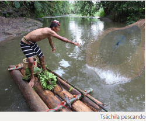
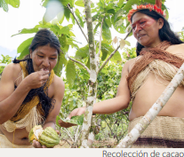

pueblos y nacionalidades ecuatorianas Alumno:
 Reflexiono para avanzar
Reflexiono para avanzar
Lee los siguientes relatos de la vida cotidiana de algunos pueblos del Ecuador.
Los tsáchilas cuentan sus costumbres en la selva

En los ríos que rodean las comunas tsáchilas quedan pocos trechos de agua para la supervivencia de especies. Los nativos de esta etnia de Santo Domingo de los Tsáchilas se sirven de esos espacios poco contaminados para enseñar a los turistas cómo sus antepasados recorrían los ríos en busca de productos para su alimentación.
El propósito es rescatar esa antigua destreza que muy poco practican las nuevas generaciones que viven en las siete comunas de la nacionalidad. La jornada para la búsqueda de alimentos empieza a las 06:00. Una pequeña embarcación formada por cuatro troncos sujetos por dos cañas guadúa, en forma horizontal, es la herramienta que sirve para la navegación.
El tsáchila Abraham Calazacón lo hace alrededor de las orillas. Primero sale en busca de los peces que va a capturar y para eso es necesario tener una buena vista. En eso, los tsáchilas se consideran expertos. Cuando Calazacón está seguro de haber visto un cardumen, lanza una red que pronto debe extraer para recoger la mayor cantidad de peces.
Toda la pesca obtenida en la jornada la lleva dentro de un canasto artesanal que va en la embarcación junto con la lanza de chonta y la red. Mientras pesca, Calazacón cuenta a los turistas que llegan a la comuna Chigüilpe que, para los antepasados, esta era una actividad cotidiana y muy importante. Dice que una jornada de pesca se podía extender todo el día porque los caminos para ir a los ríos eran demasiados boscosos y llenos de obstáculos.
Los tsáchilas rescatan estas destrezas en exhibiciones que realizan a lo largo del río Chigüilpe, que se encuentra a 10 minutos de la comuna que lleva ese mismo nombre. Estas prácticas son parte de los atractivos que este año decidieron incluir en sus ofertas para los viajeros que acuden a esa comuna, ubicada en el kilómetro 7 de la vía Santo Domingo-Quevedo.
Celebraciones waoranis que perduran en el tiempo

La habilidad para recolectar frutos y especies vegetales del bosque amazónico es todavía parte del diario vivir de varias comunidades waoranis.
Manuela Omari Ima Omene, waorani de la comunidad de Tepapare (Pastaza), autora del libro Saberes Huaorani y Parque Nacional Yasuní: Plantas, Salud y Bienestar en la Amazonía del Ecuador, reconoce que esa compleja interrelación con la flora les permite tener siempre productos frescos del bosque en la onko (casa).
“Al igual que los pikenanis (abuelos, abuelas), seguimos practicando la recolección de frutos en la selva conjuntamente con plantas medicinales, así sabemos de acuerdo con el calendario waorani cuáles son las épocas
en que podemos cosechar lo que necesitamos para comer o curarnos”.
Sin embargo, según Manuela, en la actualidad, la cultura waorani está cambiando.
“Hoy en día, inclusive nuestros y nuestras jóvenes se casan a veces con gente de afuera con costumbres muy diferentes, las cuales en ciertas ocasiones impactan en quiénes somos y cómo nos reconocemos dentro de nuestro territorio, por esto debemos continuar con las tradiciones de los pikenanis. Festejar la producción y cosecha de tewe (chonta), entre enero y abril, es importante porque nos maravillamos cosechando dagenka (chontaduro)”, pero también "nuestro sentir es que somos uno con tewe, por esto anhelamos que los matrimonios y embarazos coincidan con esta celebración ”, manifiesta Manuela. Tradicionalmente, nueve meses después de estas conmemoraciones se daban los nacimientos, justamente cuando la palma comienza a florecer.
 Comprendo para saber
Comprendo para saber
En los relatos de la vida cotidiana de cada pueblo se manifiestan sus saberes, expresados en tradiciones y costumbres. Estos saberes forman parte de nuestra identidad como ecuatorianos, por eso debemos conocerlos y valorarlos.